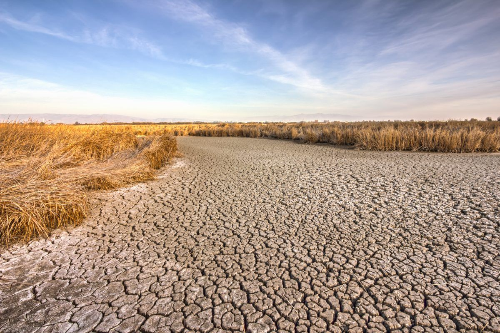
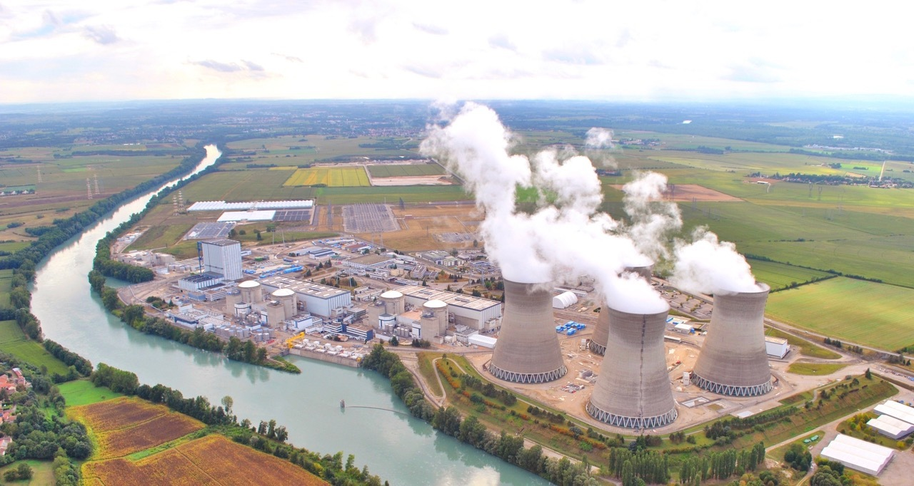

Firstly, in order to know how to save water on the society wide/community scale, we might first need to know where the most water
Firstly, in order to know how to save water on the society wide/community scale, we might first need to know where the most water
is withdrawn and used across society
70% of fresh water withdrawals for agriculture (with irrigation being responsible for a large % of water use)

20% for industry (with cooling systems for thermo electric power plants being responsible for a large % of water use)